On the wavelets day, denoising was easy: in an orthonormal basis every coefficient can be thresholded on its own. Today we ask what “sparse” means in general, and which penalty gives it.
Sparse (few nonzeros) and compressible (sorted magnitudes fall fast) signals; the right basis depends on the signal.
Three ways to say “simple”: count the nonzeros (ℓ0), sum their sizes (ℓ1), sum their squares (ℓ2).
Why ℓ1 makes exact zeros: a diamond touches an ellipse at a corner.
The lasso with a general matrix: coefficients enter one at a time; above λ_max everything is zero.
The price (shrinkage bias), a probabilistic reading (Laplace prior), and sparsity of differences (total variation).
Slides titled The math give the formulas and proofs; the ideas are complete without them.
With 1 % of the coefficients the micrograph is still recognisable; with 5 % most of the structure is back.
The coefficient histogram is peaked at 0 with heavy tails: many tiny coefficients, a few large ones along edges.
Also the DCT of JPEG works because 8 × 8 blocks are sparse in cosines.
Today: what is “sparse” in general, and how do we ask for it in a reconstruction?
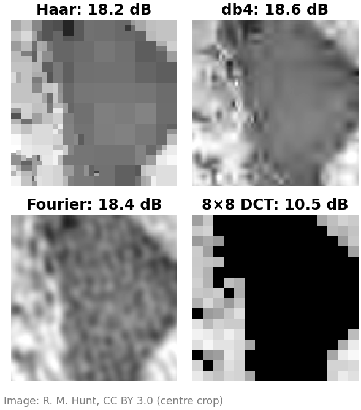
Sparse or compressible
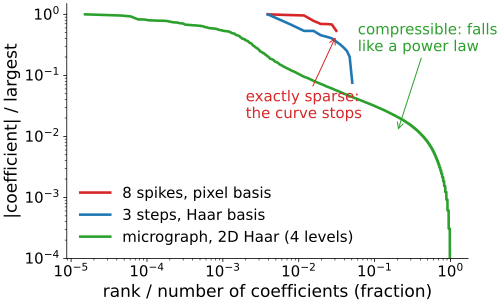
Sort the coefficients by size and plot them (log–log):
Exactly sparse: K nonzeros, then nothing. Eight spikes in the pixel basis; three steps in the Haar basis (13 nonzero of 256).
Compressible: no exact zeros, but the sorted magnitudes fall like a power law. Real images. Keeping the K largest gives a small error that shrinks as K grows.
Everything today works for both; for compressible signals we recover “as well as the best K terms allow”.
The right basis depends on the signal
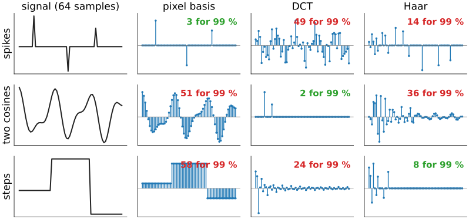
Spikes are sparse in the pixel basis, cosines in the DCT, steps in Haar. Nothing is sparse in every basis: choosing the basis is choosing what you believe about the image.
Where sparsity appears in the course
Compression: JPEG keeps few DCT coefficients per block (JPEG); JPEG 2000 few wavelet coefficients.
Denoising: wavelet shrinkage keeps the few large coefficients and kills the many small ones (shrinkage).
Tomography: few-view CT with a total-variation prior (iterative reconstruction): the image has few edges.
Spot images: a few bright pixels on a dark background (spot filters).
Spectral unmixing: each pixel contains only a few of the fluorophores (endmembers).
Today and in the next units: sparsity as a prior that lets us solve problems that have too few or too noisy data.
Denoising as a question about a penalty
Noisy coefficients w (orthonormal basis, so each one can be treated alone). Find cclose to w that is simple:
\min_c\ \tfrac12(c - w)^2 + \text{penalty}(c).
Three ways to say “simple”:
ℓ2, (λ/2)c²: small squares. Result: a linec = w/(1 + λ): every coefficient shrinks, none becomes 0.
ℓ1, λ|c|: small sizes. Result: soft threshold at λ.
ℓ0, a fixed cost per nonzero: few nonzeros. Result: hard threshold.
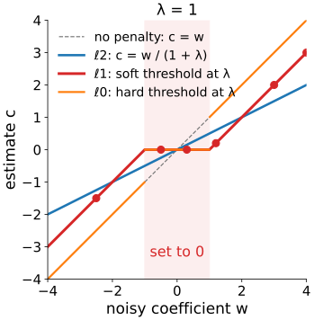
By hand: three penalties, six coefficients
w = (4,\ -0.5,\ 1.2,\ -2.5,\ 0.3,\ 3), λ = 1:
penalty
estimate c
zeros
ℓ2: c = w/2
(2, −0.25, 0.6, −1.25, 0.15, 1.5)
0
ℓ1: soft at 1
(3, 0, 0.2, −1.5, 0, 2)
2
ℓ0: hard at 1
(4, 0, 1.2, −2.5, 0, 3)
2
ℓ2 shrinks the large coefficients most (4 loses 2, 0.3 loses 0.15) and never reaches 0.
ℓ1 takes the same amount (λ = 1) off every coefficient and sets the small ones exactly to 0.
ℓ0 keeps or kills, unchanged: no shrinkage, but a jump (a tiny change in w near 1 flips the decision).
The math: the three scalar problems
Minimise f(c) = \tfrac12(c - w)^2 + p(c) for one coefficient.
ℓ2, p = \frac{λ}{2}c^2: f'(c) = c - w + λc = 0 \Rightarrow c = \dfrac{w}{1 + λ}. Zero only if w = 0.
ℓ1, p = λ|c|: for c \ne 0, c - w + λ\,\mathrm{sign}(c) = 0, so c = w - λ\,\mathrm{sign}(w) if |w| > λ; at c = 0 the slope of |c| can be anything in [-1, 1], so c = 0 is optimal when |w| \le λ. This is the soft threshold (derived on the shrinkage slide “soft thresholding minimises an ℓ1 energy”).
ℓ0, p = μ\,[c \ne 0]: either c = 0 (cost \tfrac12 w^2) or c = w (cost μ). Keep w iff \tfrac12 w^2 > μ, i.e. |w| > \sqrt{2μ}: the hard threshold. With μ = λ²/2 the threshold is λ.
Why ℓ1 makes zeros: the geometry
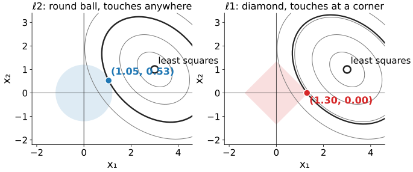
Two unknowns. The data misfit is a bowl: ellipses around the least-squares point. The penalty is a ball around 0. The answer is where the smallest ellipse touches the ball. The ℓ2 ball is round: it touches anywhere, generically off the axes. The ℓ1 ball is a diamond with corners on the axes: it usually touches at a corner, where a coordinate is exactly 0.
By hand in the picture
Round contours (an orthonormal A), least-squares point (3, 1). Instead of a penalty weight, give a budget: ‖x‖ ≤ 2.
ℓ2 ball of radius 2: the closest point to (3, 1) is along the line to the origin: 2 \cdot (3, 1)/\sqrt{10} = (1.90,\ 0.63).
ℓ1 ball (“diamond”) of radius 2: the closest point is the corner (2, 0).
Same budget, same data: ℓ2 spreads it over both coefficients, ℓ1 spends it on one.
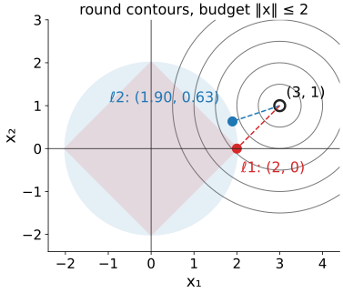
Try it: the lasso picture
ℓ0, and why not just count?
“Sparse” means few nonzeros, so why not minimise the count (ℓ0)?
With a general matrix, the count can only be minimised by trying supports: 8 nonzeros among 256 unknowns is \binom{256}{8} \approx 4 \cdot 10^{14} supports, almost five days at a billion least-squares fits per second. And it grows explosively with the size.
ℓ1 is the closest convex penalty: one valley, no local minima, solved by simple iterations (next unit).
ℓp with p < 1 is even pointier, and sparser, but not convex: several valleys; the answer depends on where the solver starts.
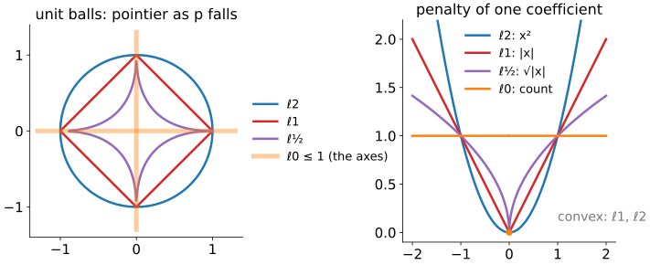
The lasso and its path
With a general matrix A (columns not orthogonal), minimise \tfrac12\|A\mathbf x - \mathbf y\|^2 + λ\|\mathbf x\|_1. Statisticians call this the lasso; we will just say “ℓ1 regularisation”.
Start at large λ: all zero. That happens for every λ above λ_max, the largest correlation |\mathbf a_j^\top\mathbf y| of a column with the data.
Lower λ: coefficients enter one at a time.
ℓ2 (ridge, the Tikhonov of regularisation): all enter at once and only reach 0 at λ = ∞.
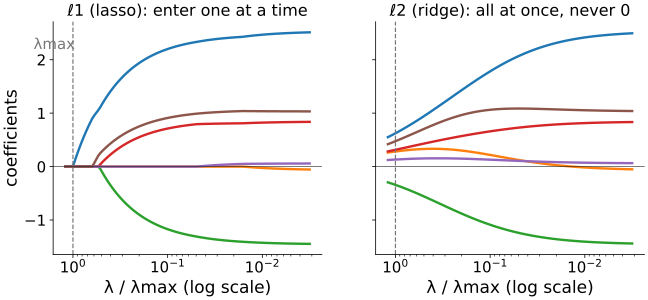
The math: lasso optimality conditions
f(\mathbf x) = \tfrac12\|A\mathbf x - \mathbf y\|^2 + λ\|\mathbf x\|_1 is convex. At a minimum, 0 is in the subgradient: the gradient of the smooth part plus λ times any slope of |x_j| (\mathrm{sign}(x_j) if x_j \ne 0, anything in [-1, 1] if x_j = 0). With the residual \mathbf r = \mathbf y - A\mathbf x^\star:
\mathbf a_j^\top\mathbf r = λ\,\mathrm{sign}(x_j^\star)\ \text{ if } x_j^\star \ne 0, \qquad |\mathbf a_j^\top\mathbf r| \le λ\ \text{ if } x_j^\star = 0.
Every active column has the same correlation λ with the residual; inactive ones have less.
\mathbf x^\star = 0 means \mathbf r = \mathbf y, so it is optimal iff |\mathbf a_j^\top\mathbf y| \le λ for all j: \quad λ \ge λ_{\max} = \|A^\top\mathbf y\|_\infty.
With A = I the conditions give the soft threshold again: x_j = y_j - λ\,\mathrm{sign}(x_j) or |y_j| \le λ.
The math: ℓ1 is the best convex stand-in for ℓ0
On the box |x_j| \le 1, the largest convex function below \|\mathbf x\|_0 (its convex envelope) is \|\mathbf x\|_1. In 1D: the count is 0 at 0 and 1 elsewhere; the largest convex function below it on [-1, 1] is |x|.
Ridge has the closed form \mathbf x = (A^\top A + λI)^{-1}A^\top\mathbf y: a smooth (rational) function of the data. A component is 0 only if that formula happens to vanish exactly, which for data with noise happens with probability 0.
ℓ1’s exact zeros come from the kink of |x| at 0: the slope can be anything in [-1, 1] there, so a whole interval of data maps to x_j = 0.
Shrinkage bias
ℓ1 pays for its zeros: it pulls every surviving coefficient towards 0 by λ (the soft threshold).
Peaks lose height; edges lose contrast (as in shrinkage: “soft loses contrast”).
Fix 1, debiasing: let ℓ1 choose the support, then refit those coefficients by least squares.
Fix 2, reweighted ℓ1: repeat with smaller weights on large coefficients (closer to ℓ0).
Example: four spikes (3, −2.5, 2, 1.2) with noise σ = 0.3, λ = 1: soft gives (2.01, −1.32, 0.82, 0.65); after the refit (3.01, −2.32, 1.82, 1.65).
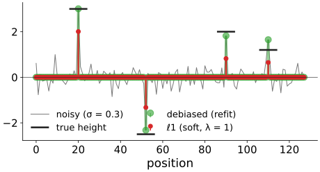
A probabilistic reading
Recall regularisation: data + λ·penalty is the most probable image when the penalty is −log of a prior.
ℓ2 penalty = Gaussian prior: values near 0 likely, large values very unlikely.
ℓ1 penalty = Laplace prior: a sharp peak at 0 and heavy tails: most coefficients tiny, a few large ones allowed.
That is exactly the shape of the wavelet coefficient histogram of a real image (right: Haar details of the micrograph, log scale). The Gaussian with the same spread puts almost no probability on the large coefficients that carry the edges.
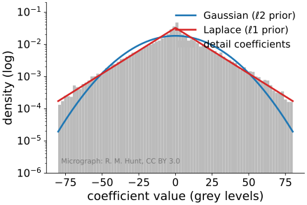
The math: MAP with a Laplace prior
Model: \mathbf y = A\mathbf x + \mathbf n, Gaussian noise of standard deviation σ; independent Laplace prior p(x_j) = \frac{1}{2b}e^{-|x_j|/b}.
-\log p(\mathbf x \mid \mathbf y) = \frac{1}{2σ^2}\|A\mathbf x - \mathbf y\|^2 + \frac1b\|\mathbf x\|_1 + \text{const}.
Multiply by σ²: the maximiser is the lasso with λ = \frac{σ^2}{b}.
More noise (σ up) or a narrower prior (b down): larger λ.
With a Gaussian prior of variance s^2 the same steps give ridge with λ = σ²/s² (the regularisation MAP slide).
The MAP estimate of a Laplace prior is sparse; samples from that prior are not (a Laplace sample is never exactly 0). Sparsity comes from the optimisation, not from the prior alone.
Analysis or synthesis?
Two ways to say “this image is sparse”:
Synthesis: the image is a few atoms, \mathbf x = W\mathbf c with \mathbf c sparse (wavelets, DCT, a dictionary). Penalise \|\mathbf c\|_1.
Analysis: some transform of the image is sparse. The commonest: its differences (gradient). ℓ1 of the gradient is total variation (TV), owned by the Ising and MRF day.
A step has one nonzero difference; a ramp has many small ones. So TV keeps steps and turns ramps into staircases: sparsity of differences makes piecewise-constant images.
For an orthonormal W the two views are the same; for redundant transforms they differ.
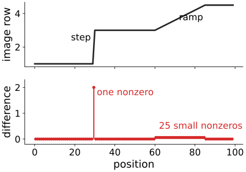
Summary
A signal is sparse in a basis if few coefficients are nonzero, compressible if its sorted magnitudes fall fast. The basis must fit the signal.
Three penalties: ℓ2 shrinks everything and never reaches 0; ℓ1 subtracts λ and sets small coefficients exactly to 0; ℓ0 keeps or kills.
Geometry: the ℓ1 ball has corners on the axes, so the misfit ellipse usually touches it where coordinates are 0.
ℓ0 needs a search over supports; ℓ1 is convex and solvable, and it is the best convex stand-in.
The lasso path: everything 0 above λ_max; coefficients enter one at a time.
Price: shrinkage bias (fix: refit the support). Reading: a Laplace prior. Differences instead of coefficients: TV.
Next: how to solve ℓ1 problems when A blurs, masks or undersamples.